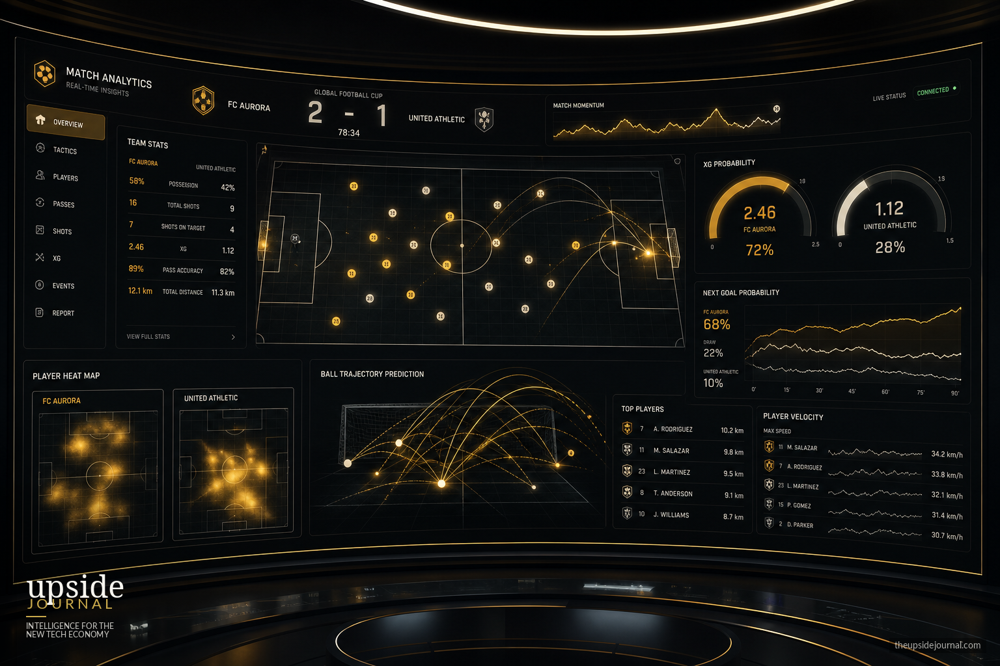

Fourteen cameras. Five hundred data points per second. Zero human intervention. The 2026 FIFA World Cup isn't just the biggest football tournament on Earth — it's the largest live deployment of computer vision in sports history.
When fans tune in to the 2026 World Cup, they'll see goals, celebrations and moments of brilliance that become part of football history. What they won't see is the invisible technology making many of those moments possible.
Behind every match sits an increasingly sophisticated network of artificial intelligence, tracking systems, predictive analytics and real-time data processing tools that are reshaping how football is played, coached and analysed. Modern football is no longer driven solely by instinct. It's powered by data.
Football's Data Explosion
Just a decade ago, match analysis was largely built around basic statistics: possession, shots on target and completed passes.
Today, elite teams collect thousands of data points during every match. Advanced optical tracking systems use multiple cameras positioned around stadiums to monitor every player and the ball in real time. According to Al Jazeera's reporting on the tournament's technology, the official match ball — Adidas's 'Trionda' — contains an inertial measurement unit chip that captures data 500 times per second, monitoring acceleration and movement in three dimensions.
Every sprint, acceleration, passing angle, defensive movement and positional adjustment becomes measurable. The result is a level of insight that previous generations of coaches could only imagine.
The Rise of Predictive Football
Data collection is only the beginning. Artificial intelligence is increasingly being used to predict what might happen next.
Machine learning models analyse millions of historical events to estimate probabilities throughout a match. What is the likelihood of a shot becoming a goal? Which passing option offers the highest chance of creating a scoring opportunity? Which player is at greater risk of fatigue or injury?
These predictive models help coaching staff make better decisions before, during and after matches.
The concept of "expected goals" (xG), once considered a niche analytics metric, is now widely studied in academic research and used across the football industry. It measures the quality of scoring opportunities based on historical patterns and provides a deeper understanding of team performance beyond the final scoreline.

AI on the Touchline
The role of artificial intelligence extends far beyond performance analysis. Coaches increasingly rely on AI-powered platforms to review opposition tactics, identify weaknesses and simulate game scenarios.
Before a major tournament, teams can analyse thousands of hours of footage within minutes. Algorithms identify recurring patterns that human analysts might overlook, helping coaching staff prepare more effectively for different opponents.
In a World Cup environment where margins are incredibly small, these insights can become a competitive advantage.
Technology Inside the Stadium
Fans will also notice the impact of technology during officiating decisions. Semi-automated offside systems, advanced ball-tracking technology and AI-assisted video analysis have already become part of international football.
These systems use a combination of sensors, cameras and computer vision algorithms to provide faster and more accurate decisions. While debates around technology in sport continue, governing bodies argue that AI-assisted officiating reduces human error and improves fairness.
Enterprise networks aren't paying for broadcast rights. They're paying millions for the raw data stream. The most valuable thing at this World Cup isn't the trophy — it's the algorithm watching every move.
The Data Arms Race
As football becomes more data-driven, a new challenge is emerging. Access to technology is increasingly becoming a competitive differentiator.
National teams and clubs with larger resources can invest heavily in data scientists, performance analysts and proprietary AI systems. The question is no longer whether teams use data. It's how effectively they use it.
Success in modern football increasingly depends on an organisation's ability to turn information into actionable decisions.
The Future of Football Intelligence
The 2026 World Cup will showcase some of the world's greatest athletes. But it will also showcase something less visible: one of the most advanced real-time data ecosystems ever deployed in sport.
The future of football isn't simply faster players or better tactics. It's the fusion of human creativity and machine intelligence.
As AI continues to evolve, the biggest competitive advantage may not be found on the pitch at all. It may be hidden inside the algorithms quietly analysing every movement, every pass and every decision before the rest of us even notice.
The beautiful game is becoming the intelligent game. And most fans will never see the technology making it happen.
Related: Read The Enterprise AI Stack Nobody Is Talking About — What Cannes Brands Are Missing for our deep dive into the infrastructure behind AI-powered operations across industries.